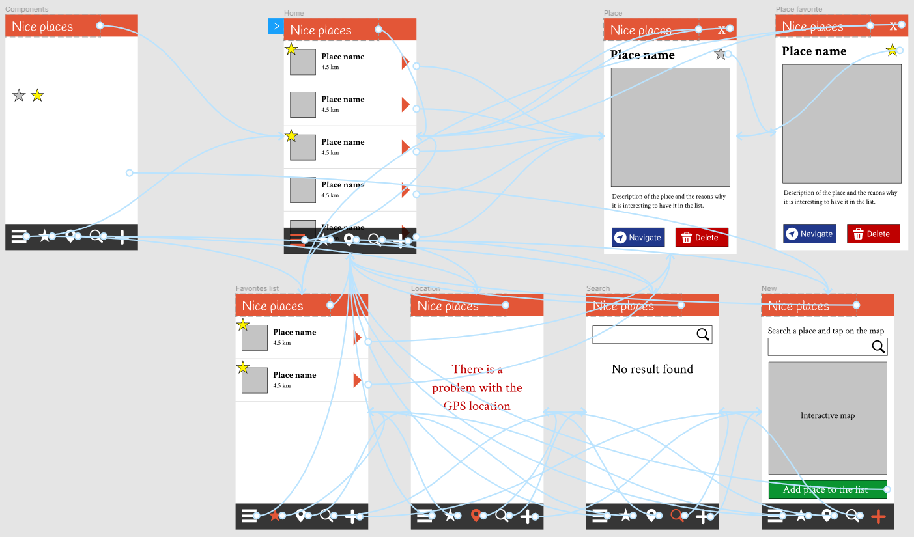

Prototypage high fidelity dans l'UX
Mattia A. Fritz
TECFA, Université de Genève
Définition de prototype
Un prototype est un échantillon, un modèle ou une version
préliminaire d'un produit construit pour tester un concept ou un
processus. Le prototypage sert à fournir des spécifications pour un
système réel et fonctionnel plutôt que théorique.
— Adapté depuis Wikipedia
Prototypes low-fi et high-fi


High fidelity
2 types de prototypes high-fi
Wireframe high-fi
Maquette interactive
Prototypage high-fi
Utilisé surtout, mais pas exclusivement, dans ces contextes :
-
Définir les propriétés graphiques du produit
Les éléments esquissés dans les prototypes low-fi sont définis au détail prêt (i.e. camera ready) -
Véhiculer l'identité visuelle du produit
Les éléments identitaires du produit sont en général le logo, les couleurs du site, les images, etc. -
Simuler/tester la réaction émotionnelle au produit
Selon le type de produit, la première impression peut être déterminante et un prototype high-fi permet d'avoir un retour sur cet aspect.
Selon l'ampleur du projet et de l'équipe, ce type de travail est souvent effectué par des professionnels du design.
Design System
A design system is a set of interconnected patterns and shared
practices coherently organized to serve the purpose of a digital
product. Patterns are the repeating elements that we combine to
create an interface [...]. Practices are how we choose to create,
capture, share and use those patterns, particularly when working in
a team.
— Kholmatova, 2017
Design System
La fonction de l'interface détermine ce que l'utilisateur peut
faire (e.g. lien, menu, ...). La perception détermine le
look-and-feel propre à l'expérience spécifique avec ce
site ou cette application.
Logo et identité graphique
Le logo définit souvent l'identité graphique de l'ensemble du
site (couleurs, polices, ...).
Palette des couleurs
Définir une palette des couleurs avec des finalités esthétiques et fonctionnelles.
Évitez d'identifier les couleurs avec leur noms et utilisez plutôt une fonction générique, car les parties prenantes peuvent décider de changer dans un deuxième temps.
Saillance visuelle
Utiliser les couleurs pour définir/guider l'importance des
éléments dans la page.
Grid System
Division de l'écran dans une grille pour maintenir des
proportions et s'adapter à plusieurs supports.
Composantes et instances
Une instance est une manifestation d'une composante, avec
des propriétés spécifiques (e.g. couleur, texte, ...). Des
modifications à l'instance ne s'appliquent pas à la
composante/matrice, mais des modifications à la composante se
propagent aux instances.
Trait d'union
Maquette interactive
Utilisé surtout, mais pas exclusivement, dans ces contextes :
-
Tester les fonctionnalités du produit
Lier les éléments interactifs ou les pages dans une navigation pour les évaluer par rapport aux besoins/objectifs. -
Simuler une expérience réelle
Induire une expérience aussi proche que possible à l'utilisation effective du produit dans un contexte et sur le(s) dispositif(s) envisagé(s). -
Déterminer la distance d'un
minimum viable product
Établir les fonctionnalités manquantes ou de trop par rapport à une version minimale du produit qu'on peut déployer/commercialiser.
Diagramme d'activité
 Itcrew,
CC BY-SA 4.0, via Wikimedia Commons
Itcrew,
CC BY-SA 4.0, via Wikimedia Commons
Plan de site
 Trevor MacInnis at the English-language Wikipedia,
CC BY-SA 3.0, via Wikimedia Commons
Trevor MacInnis at the English-language Wikipedia,
CC BY-SA 3.0, via Wikimedia Commons
Kanban board
Démarche similaire au vrai développement, mais sans encore écrire du code source.Interactivité : liens entre écrans
Vers un minimum viable product
Cliquez une fois sur la maquette pour pouvoir l'utiliser et l'ouvrir en plein écran avec la touche F. Pour passer à la slide suivante cliquez d'abord hors du cadre noir.

{kind=link}
{kind=link}